fabs 앞의 부호 반전을 제거하기
절댓값이 부호를 제거한다는 성질을 IR과 기계어에서 확인한다.
94170_.pdf의 전체 내용입니다. 설명·코드·표·검증 기록을 생략하지 않고 옮겼습니다. 그림 안의 문자 인식 결과에는 기호 오류가 있을 수 있어 이미지도 함께 제공합니다.
이 문서의 목차
/ #94170 / 이슈 분석
#94170 이슈 분석
https://github.com/llvm/llvm-project/issues/94170
이슈 읽어보기
“fneg가 변경하는 것은 값의 부호이고, 바로 뒤의 fabs가 그 부호를 제거하므로 중간의 fneg는 최종 결과에 영향을 주지 않는다. “
LLVM IR 살펴보기
define float @src(float %0) {
entry:#94170 이슈 분석 1

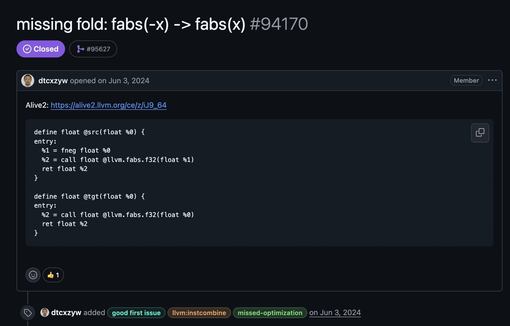
그림 안의 텍스트 · 문자 인식
missing fold: fabs(-x) -> fabs(x) #94170
v Closed
1 #95627
dtcxzyw opened on Jun 3, 2024
Alive2: https://alive2.llvm.org/ce/z/1J9_64|
define float asrc(float 80) {
entry:
81 = fneg float 80
82 = call float @llvm. fabs.f32(float 81)
ret float 82
define float etgt(float 80) {
entry:
J 'et tioet $z
82 = call float ellvm.fabs.f32(float 80)
⑧ dtcxzyw added good first issue
lIvm:instcombine
missed-optimization) on Jun 3, 2024이미지에서 읽은 문자입니다. 코드 기호는 그림에서 확인하세요.
페이지 배치·기호·도식 확인하기

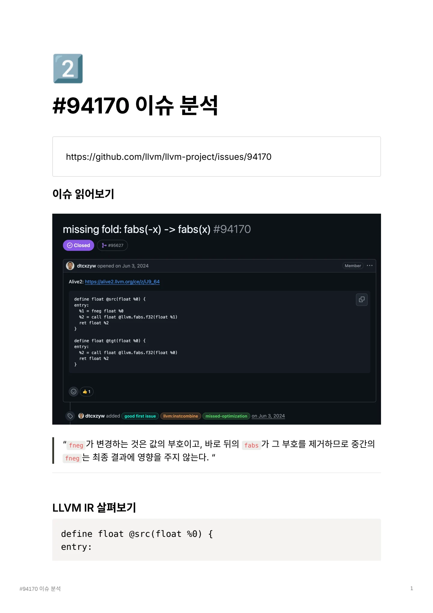
%1 = fneg float %0 / %2 = call float @llvm.fabs.f32(float %1) / ret float %2
%1 = fneg float %0
%2 = call float @llvm.fabs.f32(float %1)
ret float %2
}define float @tgt(float %0) {
entry:
%2 = call float @llvm.fabs.f32(float %0)
ret float %2
}기존 src에서 fabs 는 입력값의 부호를 제거하므로, 바로 앞에서 수행한 fneg는 최종결과에 영향을 주지 않는다.
따라서 %1 = fneg float %0 이 라인을 삭제하는 것이 이슈의 핵심이다.
LLVM은 fabs(-x) 라는 표현식에서 fneg으로 변경한 부호가 바로 다음 fabs에 의해 제거 된다는 사실을 인식하지 못하고 있었다.
그 결과 불필요한 fneg instruction과 intermediate value가 생성되고 있었다.
이를 InstCombine에서 : fabs(-x) → fabs(x) 로 fold하여 불필요한 부동소수점 부호 반전 연산을 제거하는 것이 이슈의 목표이다.
Alive2 proof 이해하기 fneg가 정확히 무엇인가 fneg가 값의 크기를 바꾸는 것이 아닌 부호만 반대로 만든다. (edge case: 0.0 → 0.0)
llvm.fabs가 정확히 무엇인가
call float @llvm.fabs.f32(float %x) 라는 instruction은 float값의 절댓값을 구한다.Alive2는 IR의 의미를 기준으로 다음과 같은 경우까지 고려한다.
일반 부동소수점 값 -> 검증 됨.
+0.0 -> 검증 됨.
-0.0 -> 검증 됨.
+infinity -> 검증 됨.
-infinity -> 검증 됨.
NaN#94170 이슈 분석 2
페이지 배치·기호·도식 확인하기

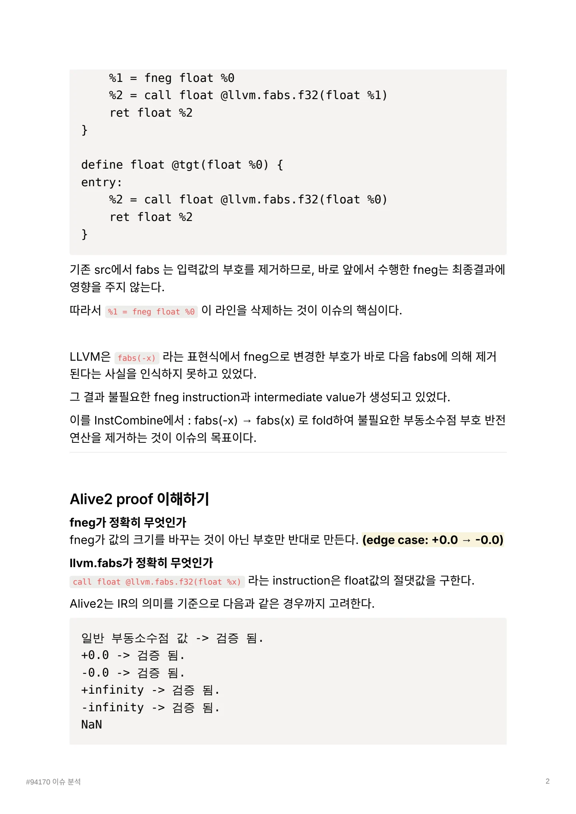
→ NaN의 종류와 payload를 포함한 세부 동작은 Alive2의 LLVM IR 의 / 미 모델에 따라 검증한다. / poison -> 입력이 poison인 경우 계속 poison을 전달함 ->
→ NaN의 종류와 payload를 포함한 세부 동작은 Alive2의 LLVM IR 의미 모델에 따라 검증한다.
poison -> 입력이 poison인 경우 계속 poison을 전달함 -> 문제 없음
undef와 관련된 의미 -> tgt가 src에 없던 새로운 결과나 동작을 만들지 않으므로 유효함.
https://alive2.llvm.org/ce/z/T0epmE
Alive2를 이용하여 fabs(fneg(x)) → fabs(x) 변환의 의미 보존 여부를 검증하였다.
기본 fabs 뿐만 아니라 Fast-Math Flag( nnan , ninf , nsz )가 적용된 경우도 각각 독립적
으로 검증하였으며, 모든 경우에서 Transformation seems to be correct! 가 출력되어 총 4개의 변환이 LLVM IR 의미상 안전함을 확인하였다.
https://alive2.llvm.org/ce/z/YedfDv
성능 및 코드 생성 분석
1. IR 분석
최적화 전:
#94170 이슈 분석 3

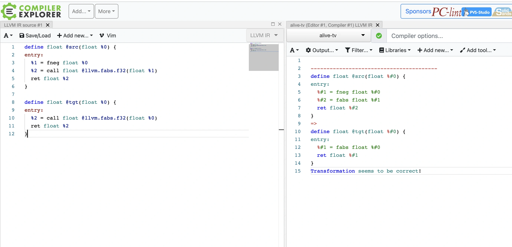
그림 안의 텍스트 · 문자 인식
COMPILE XPLORE LLVM IR source #1X A- B Save/Load + Add new...- V Vim ce-2he --086 t520(--086 80) 1 81 = Eneg float 80 82 = call tloat e11vm.tabs.£32(Eloat 81) LeC 110a6 60 detine float etgt(float 8o) 1 82 - call tloat e1lvm.fabs.f32(£1oat 80) ret tloat 82 ㅐ Sponsors PC-linth ns.sw ANe.tv(=otora.comber#)MRx LVMIR Compiler options. A~ # output..• T Filter... e Libraries- + Add new...• / Add tool...- ceine sdoat usretdoat S#0 8#2 - Eabs float 8#1 detine float etgt(tloat 8#0) ( ret tloat s*1 geem o Core
이미지에서 읽은 문자입니다. 코드 기호는 그림에서 확인하세요.
페이지 배치·기호·도식 확인하기

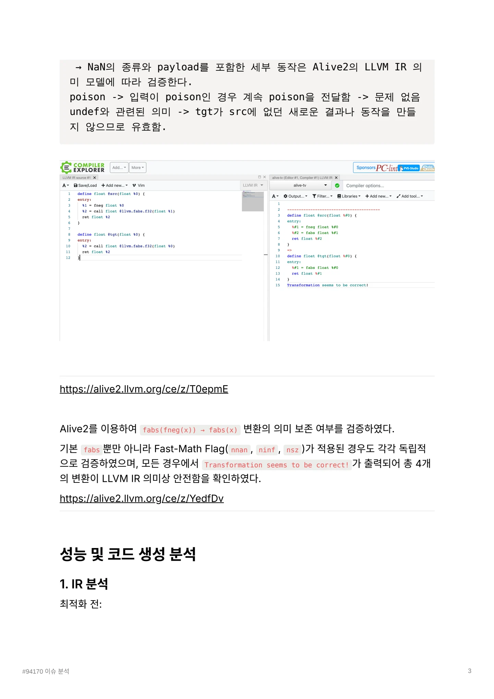
%neg = fneg float %x / %fabs = call float @llvm.fabs.f32(float %neg) / ret float %fabs
%neg = fneg float %x
%fabs = call float @llvm.fabs.f32(float %neg)
ret float %fabs최적화 후:
%fabs = call float @llvm.fabs.f32(float %x)
ret float %fabs2개에서 1개로 감소
InstCombine의 canonicalization 개선이 확인된다.
2. src.ll 작성
declare float @llvm.fabs.f32(float)define float @test(float %x) {
entry:
%neg = fneg float %x
%fabs = call float @llvm.fabs.f32(float %neg)
ret float %fabs
}3. tgt.ll 작성
declare float @llvm.fabs.f32(float)define float @test(float %x) {
entry:
%fabs = call float @llvm.fabs.f32(float %x)
ret float %fabs
}두 함수는 이름과 타입을 동일하게 유지하고, 비교 대상인 fneg instruction의 존재 여부만 다르게 구성하였다.
#94170 이슈 분석 4
페이지 배치·기호·도식 확인하기

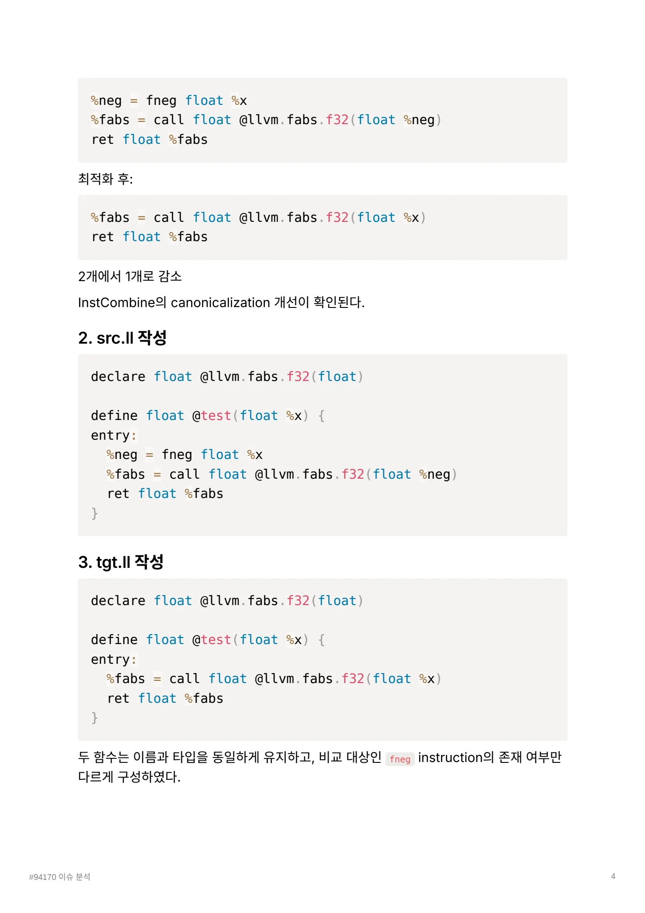
- %neg = fneg float %x / - %fabs = call float @llvm.fabs.f32(float %neg) / + %fabs = call float @llvm.fabs.f32
- %neg = fneg float %x
- %fabs = call float @llvm.fabs.f32(float %neg)
+ %fabs = call float @llvm.fabs.f32(float %x)src.ll에 InstCombine을 미리 적용하면 패치 후 형태로 변환되므로, Assembly 비교에서 는 두 파일을 각각 llc에 직접 전달한다.
또한 LLVM 백엔드가 fabs(fneg(x))를 자체적으로 단순화할 수 있으므로, 최적화 전후 Assembly가 동일하게 나올 가능성도 고려한다.
4. AArch64 Assembly 생성
llc \
-mtriple=aarch64-apple-darwin \
-mcpu=apple-m1 \
-O2 \
src.ll \
-o src-a64.sllc \
-mtriple=aarch64-apple-darwin \
-mcpu=apple-m1 \
-O2 \
tgt.ll \
-o tgt-a64.s5. 생성된 Assembly 확인
sed -n '/_test:/,/Lfunc_end/p' src-a64.ssed -n '/_test:/,/Lfunc_end/p' tgt-a64.smacOSAArch64는 함수 심볼이 _test: 형태로 출력된다.
6. Assembly diff 확인
#94170 이슈 분석 5
페이지 배치·기호·도식 확인하기

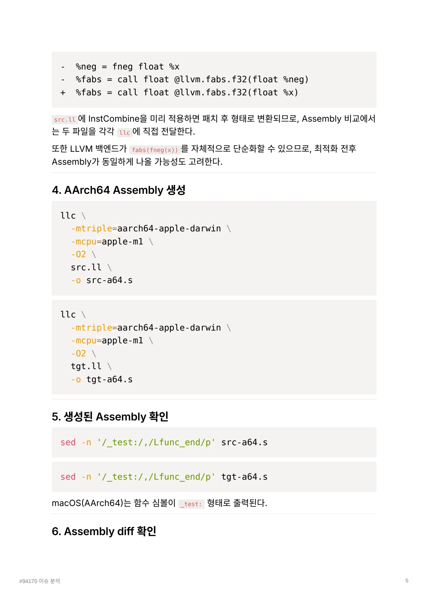
diff -u src-a64.s tgt-a64.s / 아무 출력이 나오지 않음 → 두 Assembly 가 완전히 동일한 것이다 . / 정리
diff -u src-a64.s tgt-a64.s아무 출력이 나오지 않음 → 두 Assembly가 완전히 동일한 것이다.
정리 InstCombine 적용 전 IR에는 fneg 와 llvm.fabs 가 모두 존재하지만, aarch 백엔드가 코드 생성 단계에서 fabs(fneg(x))를 fabs(x)와 동일한 형태로 결합하였다. 따라서 패치 전후 LLVM IR은 다르지만 최종 aarch Assembly에서는 차이가 발생하지 않았다.
InstCombine 단계에서 더 일찍 불필요한 fneg를 제거
InstCombine 적용 전 LLVM IR에는 fneg 와 llvm.fabs 가 모두 존재하지만, Apple M1 대 상 AArch64 백엔드는 코드 생성 단계에서 fabs(fneg(x)) 와 fabs(x) 를 동일한 Assembly 로 변환하였다.
따라서 이번 단일 예제에서는 패치 전후의 최종 기계어 및 직접적인 런타임 성능 차이가 관 찰되지 않았다.
이번 패치의 주요 효과는 불필요한 fneg 와 intermediate SSA value를 InstCombine 단 계에서 더 일찍 제거하여 IR을 canonical form으로 만들고, 후속 최적화 패스가 더 단순한 IR을 처리하도록 하는 데 있다.
패치 분석 llvm.fabs 호출의 입력이 fneg인지 검사하고, 맞다면 fneg 안쪽의 원래 값을 fabs에 직접 연결한다.
#94170 이슈 분석 6
페이지 배치·기호·도식 확인하기

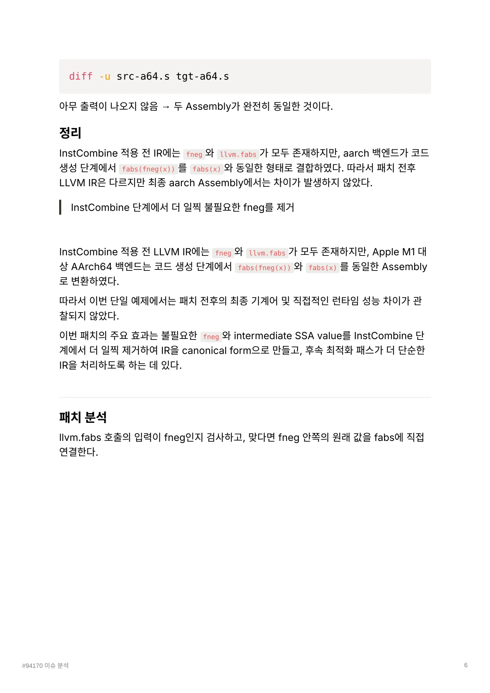
1. / 패치가 들어간 위치 / llvm/lib/Transforms/InstCombine/InstCombineCalls.cpp
1. 패치가 들어간 위치
llvm/lib/Transforms/InstCombine/InstCombineCalls.cpp위 파일은 이름 그대로 함수 호출 과 llvm intrincsic 호출 을 InstCombine에서 단순화 하는 코드를 담고 있다.
일반함수 fabs() 가 아니라 LLVM intrinsic인 @llvm.fabs.f32 이기 때문에
InstCombineCalls.cpp 에서 처리하는 것이 자연스럽다.case Intrinsic::fabs: {위 분기에 코드가 추가되었다.
2. 변경된 핵심 코드1
case Intrinsic::fabs: { // instrinsic 호출을 종류별로 처리하는
switch의 분기
Value *Cond, *TVal, *FVal;
// select 조건, true일때 값, false일때 값
Value *Arg = II->getArgOperand(0);
// II는 현재 검사중인 instruction을 가르킨다.
// 즉, llvm.fabs 호출을 나타내는 객체를 나타낸다.#94170 이슈 분석 7

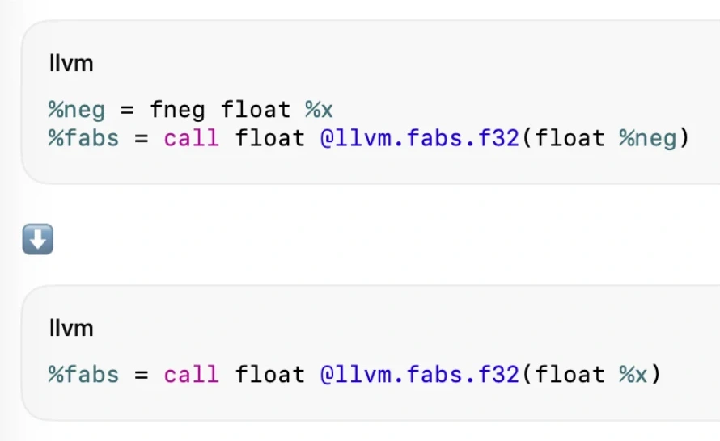
그림 안의 텍스트 · 문자 인식
llvm %neg = fneg float %x %fabs = call float 0llvm.fabs.f32(fl0at %neg) lIvm %fabs = call float 01lvm.fabs.f32(float %x)
이미지에서 읽은 문자입니다. 코드 기호는 그림에서 확인하세요.
페이지 배치·기호·도식 확인하기

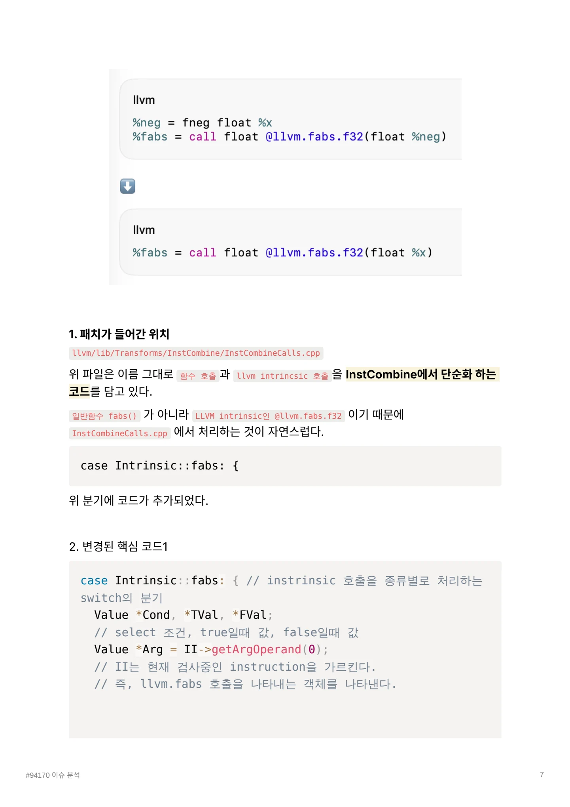
// fabs에 전달된 입력값을 가져온다는 뜻이다. / Value *X; / 기존 코드가 II→getArgOperand(0)를 바로 match()에 넣던 것을, 먼저 Arg라는 변수로
// fabs에 전달된 입력값을 가져온다는 뜻이다.
Value *X;기존 코드가 II→getArgOperand(0를 바로 match()에 넣던 것을, 먼저 Arg라는 변수로 저장하도록 한 점이다.
예시로
%neg = fneg float %x
%fabs = call float @llvm.fabs.f32(float %neg)이면 위 코드에 의해서 패턴 매칭이 성공하면
Arg = %neg
X = %x가 된다.
3. 변경된 핵심코드2
// fabs(-X) --> fabs(X) 가장 중요한 패턴 매칭
if (match(Arg, m_FNeg(m_Value(X)))) {
CallInst *Fabs =
Builder.CreateUnaryIntrinsic(Intrinsic::fabs, X, I
I);
return replaceInstUsesWith(CI, Fabs); // 기존 instructi
on을 새로운 instruction으로 교체.
} if (match(Arg,m_Select(m_Value(Cond), m_Value(TVal), m_Va
lue(FVal)))) {
// 기존 select 관련 fold
...
}
}match(Arg, Pattern) → LLVM의 패턴 매칭 기능이다.
⇒ Arg가 뒤에 지정한 패턴과 같은 구조인지 검사한다. 반환 값은 bool형태
#94170 이슈 분석 8
페이지 배치·기호·도식 확인하기

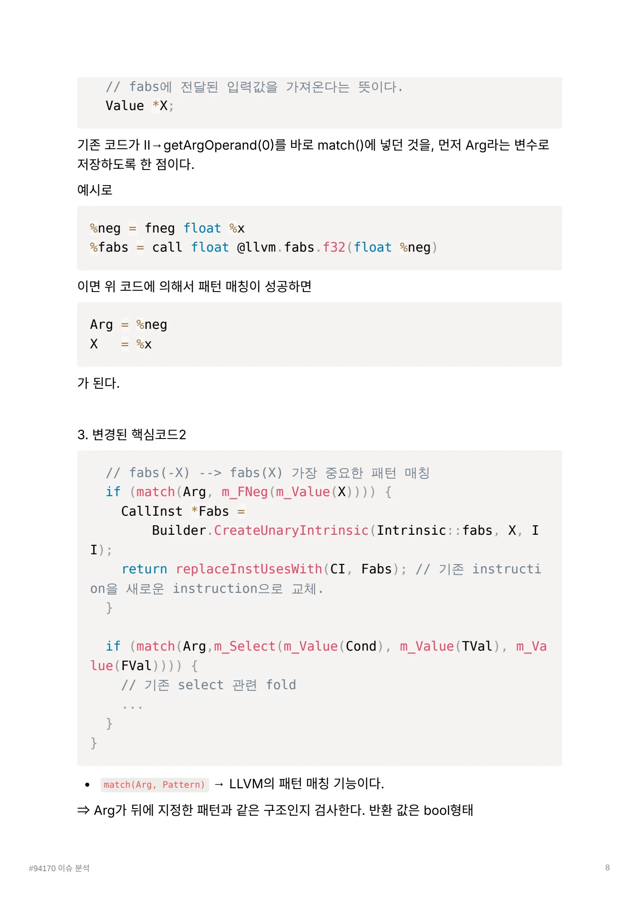
m_FNeg(…) → 값이 fneg instruction인지 검사하는 matcher이다. / m_Value(X) → 패턴에 해당하는 값을 변수 X에 저장함. / 따라서 Arg가 fneg인지 검사하고
m_FNeg(…) → 값이 fneg instruction인지 검사하는 matcher이다.
m_Value(X) → 패턴에 해당하는 값을 변수 X에 저장함.
따라서 Arg가 fneg인지 검사하고, 맞으면 fneg의 입력값을 X에 저장한다.
패턴이 맞다면 새로운 llvm.fabs 호출을 만든다.
Builder는 LLVM IR instruction을 생성하는 데 사용하는 IRBuilder 객체이다.
이번엔 unary intrinsic을 생성한다. (fabs는 operand가 하나이므로 unary임)
%neg = fneg float %x
%old = call float @llvm.fabs.f32(float %neg)에서 새로 생성되는 instruction은
%new = call float @llvm.fabs.f32(float %x)이다.
정리 현재 호출이 llvm.fabs라면:
fabs의 첫 번째 입력값을 Arg로 가져온다.
Arg가 fneg(X 형태인지 검사한다.
맞다면 X를 직접 입력으로 받는 새로운 fabs를 만든다.
기존 fabs(fneg(X))를 새 fabs(X로 교체한다.
기존 fabs가 가진 fast-math flags도 보존한다.
기존 fabs 호출의 operand를 확인한다.
↓
operand가 fneg(X)인지 패턴 매칭한다.
↓안쪽 원래 값 X를 추출한다.
↓
fabs(X)를 새로 만든다.
↓#94170 이슈 분석 9
페이지 배치·기호·도식 확인하기

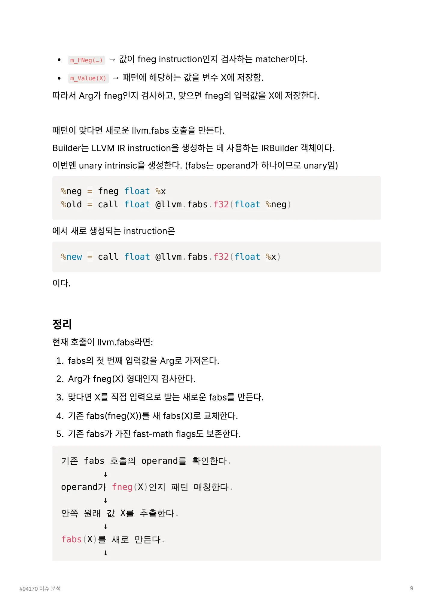
기존 fabs(fneg(X)) 사용처를 fabs(X)로 교체한다. / ↓ / 사용되지 않는 fneg는 나중에 제거된다.
기존 fabs(fneg(X)) 사용처를 fabs(X)로 교체한다.
↓사용되지 않는 fneg는 나중에 제거된다.
테스트 구현은 얼마 없지만 안정성을 증명하는 테스트가 거의 186 Line인 최적화 패치이다.
Positive Test
최적화가 가능한 경우 실제로 fneg가 제거되는지 확인한다.
1. 기본 스칼라 타입
fabs_fneg_basic
fabs_fneg_f64
fabs_fneg_f16float , double , half 타입에서 다음 변환이 적용되는지 확인한다.
%neg = fneg float %x
%fabs = call float @llvm.fabs.f32(float %neg)→
%fabs = call float @llvm.fabs.f32(float %x)2. 벡터 타입
fabs_fneg_v2f32
fabs_fneg_v4f64<2 x float>, <4 x double> 같은 벡터 타입에서도 각 원소의 불필요한 부호 반전이 제거되는 지 확인한다.
3. 상수 벡터
#94170 이슈 분석 10
페이지 배치·기호·도식 확인하기

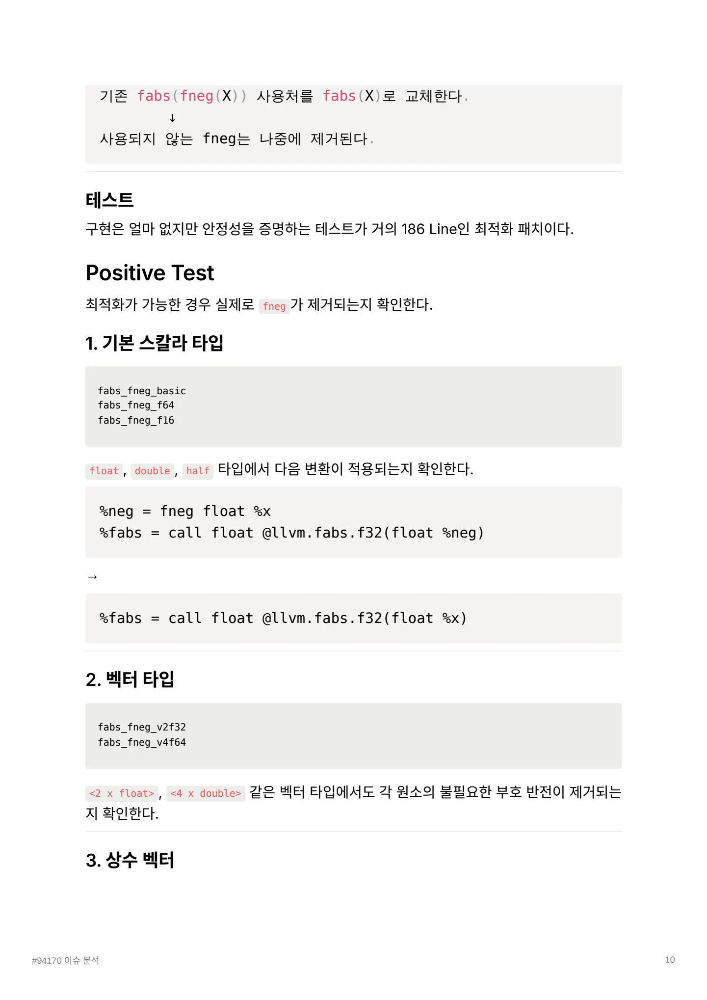
fabs_fneg_splat_v2f32 / fabs_fneg_non_splat_v2f32 / splat
fabs_fneg_splat_v2f32
fabs_fneg_non_splat_v2f32동일한 값으로 이루어진 splat 벡터와 서로 다른 값을 가진 벡터가 최종 상수 결과로 올바르 게 fold되는지 확인한다.
fabs(fneg(<2.0, 3.0>))→
<2.0, 3.0>4. Poison이 포함된 벡터
fabs_fneg_splat_poison_v2f32벡터의 정상 원소는 최적화하면서도 poison 원소의 의미는 그대로 보존하는지 확인한다.
5. Multi-use
fabs_fneg_multi_usefneg 결과가 다른 instruction에서도 사용되는 경우, fneg 자체는 남겨두고 fabs의 입력 만 원래 값으로 바꾸는지 확인한다.
%neg = fneg float %x
call void @use(float %neg)
%fabs = call float @llvm.fabs.f32(float %neg)→
%neg = fneg float %x
call void @use(float %neg)
%fabs = call float @llvm.fabs.f32(float %x)따라서 이 fold에는 m_OneUse() 조건이 필요하지 않다.
#94170 이슈 분석 11
페이지 배치·기호·도식 확인하기

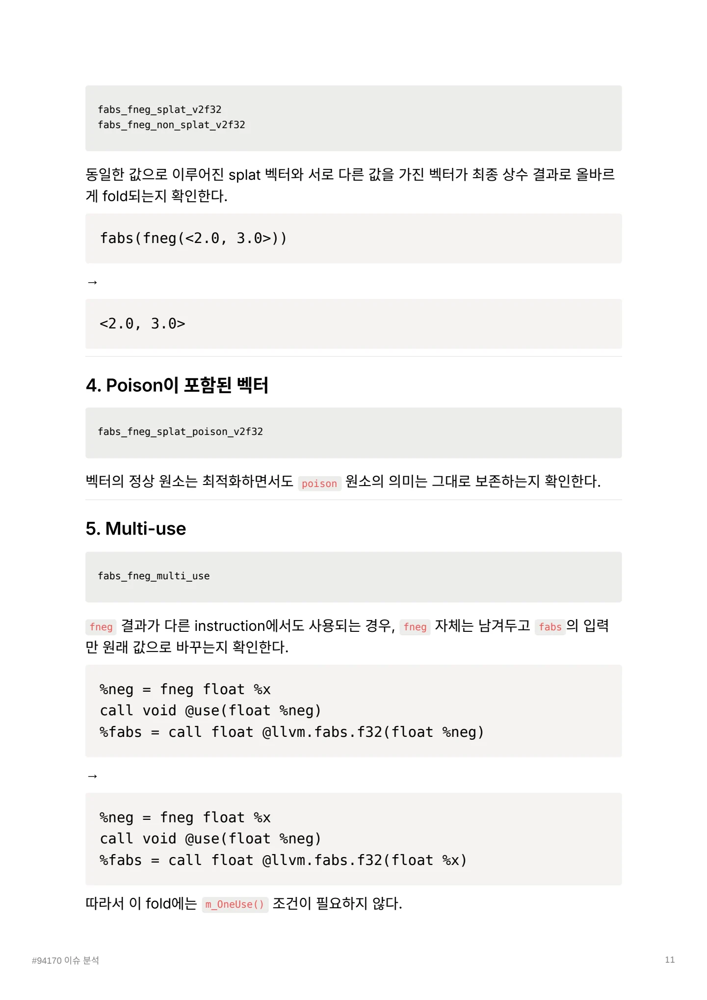
6. Fast-Math Flag / copysign 및 보존 / fabs_copysign_nnan
6. copysign 및 Fast-Math Flag 보존
fabs_copysign_nnan
fabs_copysign_ninf
fabs_copysign_nsz다음 기존 fold가 유지되는지 확인한다.
fabs(copysign(x, y)) → fabs(x)또한 기존 fabs에 붙어 있던 다음 fast-math flag가 새 fabs에도 보존되는지 검사한다.
nnan
ninf
nszNegative Test
최적화 조건을 만족하지 않는 경우 fneg를 잘못 제거하지 않는지 확인한다.
fabs가 없는 경우
fabs_fneg_no_fabs입력에 fneg만 있고 뒤에 fabs가 없는 경우다.
%neg = fneg float %x
ret float %neg이번 패치는 모든 fneg를 제거하는 최적화가 아니므로, 이 경우에는 fneg가 그대로 남아야 한다.
#94170 이슈 분석 12
페이지 배치·기호·도식 확인하기

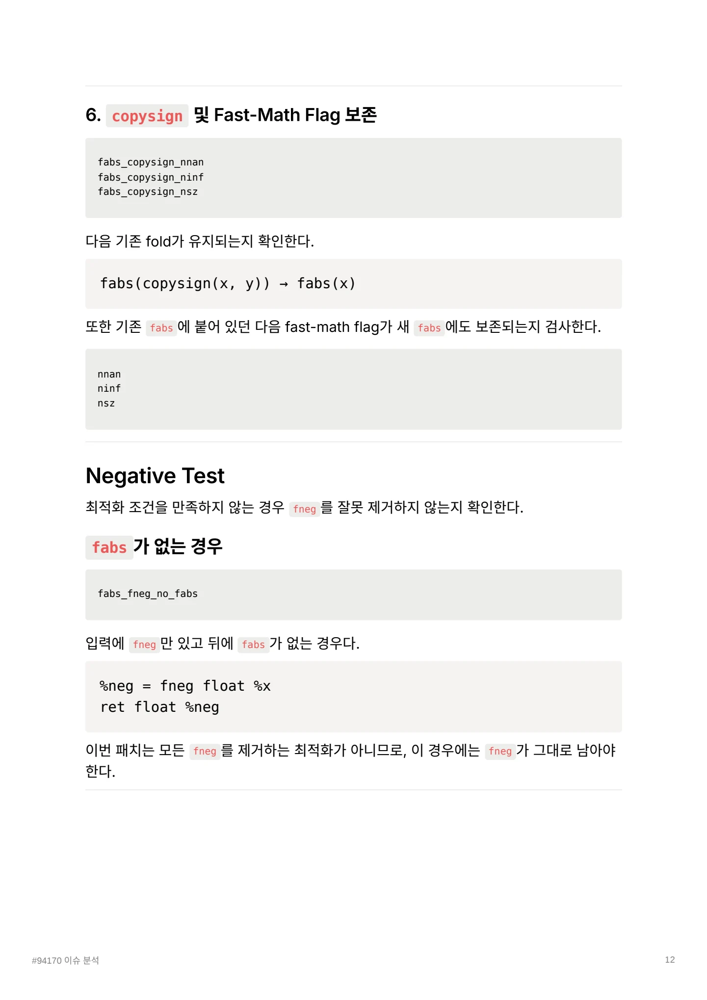
핵심 원리와 편집 주석
변환
; Before
%neg = fneg float %x
%r = call float @llvm.fabs.f32(float %neg)
; After
%r = call float @llvm.fabs.f32(float %x)fneg는 부호를 반전한다. fabs는 결과에서 부호를 제거한다. 따라서 절댓값을 구하기 직전의 부호 반전은 결과에 영향을 주지 않는다.
특수값과 intrinsic 구분
대상은 C 라이브러리의 임의 함수 호출이 아니라 LLVM의 fabs intrinsic이다. signed zero와 NaN을 포함한 의미는 해당 intrinsic의 규칙으로 판단해야 한다.
새 결과에서 쓰이지 않는 fneg는 제거할 수 있다. 다른 사용처가 있으면 그 명령어가 남을 수 있으므로 함수 전체의 명령어 수와 구분한다.
분석 순서
- src·tgt IR을 작성한다.
- Alive2로 의미 보존을 확인한다.
- opt 단독 실행으로 fold를 확인한다.
- llc로 기계어를 비교한다.
- 비트 폭·vector·플래그·추가 사용처를 테스트한다.
원자료는 matcher의 입력을 찾고 테스트의 CHECK가 무엇을 고정하는지 설명한다.
분석의 결과
핵심은 큰 알고리즘을 추가하는 것이 아니다. 결과를 바꾸지 않는 연산을 적절한 IR 계층에서 제거하는 것이다.
문서 전문과 버전
- PDFPDF 원자료 · 12쪽94170_.pdf
각 자료는 별도의 버전입니다. 같은 주제라도 구현 상태·설명 범위·수치가 다를 수 있습니다.
관련 이슈와 PR
구현·병합 상태와 측정값은 해당 제출 자료의 작성 시점 기준입니다.